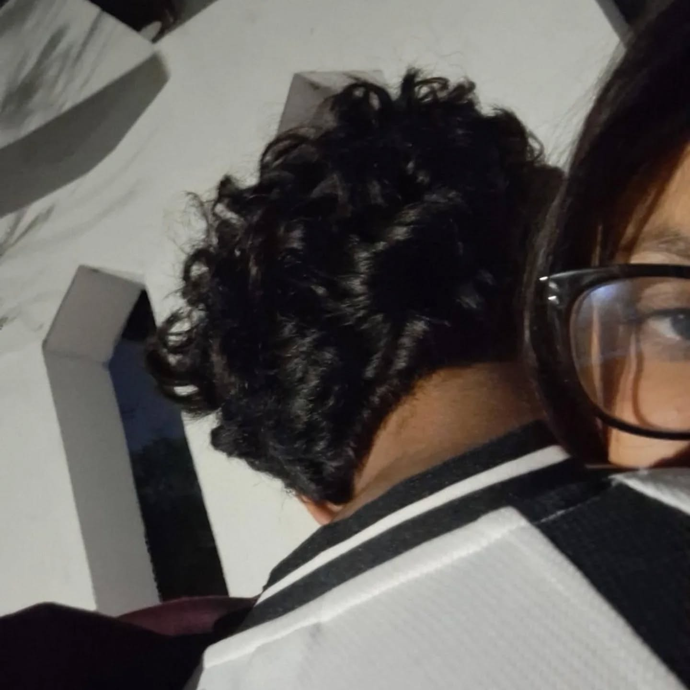
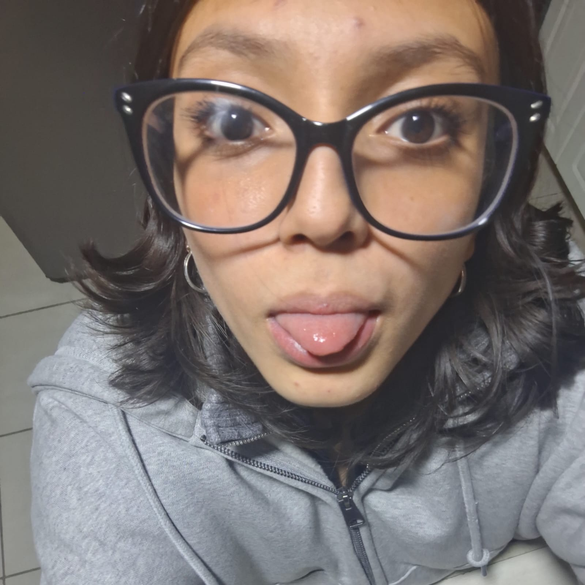

Feliz Día del Novio, mi vida.
Hoy quiero recordarte lo mucho que significas para mí, pero no solamente diciéndote que te amo, sino diciéndote lo bonito que es tenerte en mi vida. A veces siento que no me doy cuenta de todo lo que hemos construido hasta que me pongo a pensar en cada momento que hemos compartido, en todas nuestras conversaciones, nuestras risas, nuestros abrazos y hasta en las cosas más simples que hacemos juntos.
Me encanta que contigo puedo ser completamente yo. Puedo contarte mis cosas, hacerte parte de mis días, hablarte de cualquier tontería y saber que, de alguna manera, siempre terminas siendo una parte importante de lo que vivo.
También amo que nuestra historia no sea perfecta. Hemos tenido momentos difíciles, hemos aprendido, hemos cometido errores y hemos tenido que entendernos muchas veces, pero creo que todo eso también ha hecho que lo nuestro sea más real. No quiero una relación perfecta, quiero una relación en la que los dos sigamos aprendiendo a ser cada vez mejor.
Quiero seguir haciendo recuerdos contigo. Quiero que todavía nos queden muchísimas cosas por vivir, lugares por conocer, planes por cumplir, canciones que nos recuerden al otro y momentos que algún día podamos recordar diciendo “¿te acuerdas de cuando…?”.
Y sobre todo, quiero que sepas que me hace muy feliz poder compartir esta etapa de mi vida contigo. Me siento muy afortunada de haberte encontrado y de poder llamarte mi novio.
Gracias por amarme, por cuidarme, por hacerme sentir especial y por todas esas pequeñas cosas que haces que quizá para ti parecen normales, pero que para mí significan muchísimo.
Espero que nunca olvides lo importante que eres para mí y lo mucho que te amo. No sé qué nos tenga preparado la vida, pero sí sé que hoy quiero seguir eligiéndote, seguir construyendo contigo y seguir disfrutando de todo lo que nos queda por vivir.
Feliz Día del Novio, amor mío. Te amo muchísimo, más de lo que a veces sé explicar con palabras. ❤️ Te la dedico amor ❤️
MI HOMBRE, MI NIÑO, MI CIELO, MI AMOR, MI FUTURO ESPOSO, MI VIDA, MI TODOO!!


Faltan solo: 26 dias
días para nuestro día especial ❤️
¡Rasca para descubrir tu video!
Pasa el cursor o tu dedo sobre el recuadro para revelar la sorpresa:

Mi Mayor Felicidad 💓
Amor, palabras me faltan para agradecer todo lo que haz hecho por mí, de verdad, eres el mejor novio del mundo, a pesar de que ambos hemos tenido errores, seguimos juntos, seguimos adelante, como la gran pareja que somos.
Compartir mi vida contigo sin duda ha sido lo mejor que me ha pasado, nunca creí que alguien llegara a amarme tanto como tú, que afortunada soy de tenerte.
Gracias por permitirme ser tu novia y amarte tanto, que sea el primero de muchos regalos digitales que hago, quiero que me acompañes durante este proceso de ser ingeniera en ciberseguridad.
Nunca olvides lo mucho que te amo, nunca dejaré de amarte, amarte me hace feliz, me hace sentirme llena. Feliz día del novio amor, te amo!
Quién va a amarte tanto como yo?
Con muchísimo amor, tu linda novia Jei Romero.
